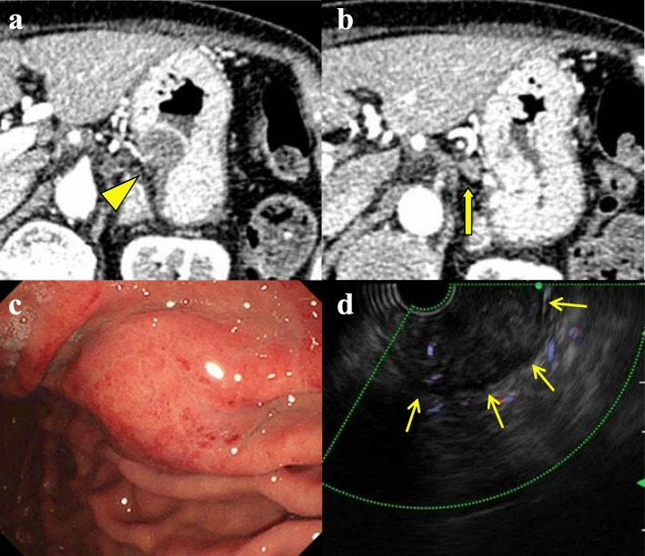
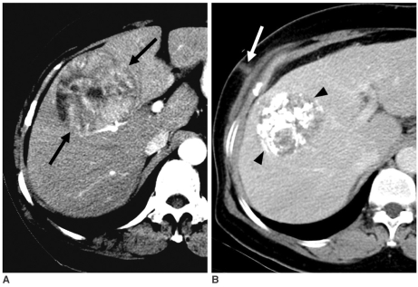
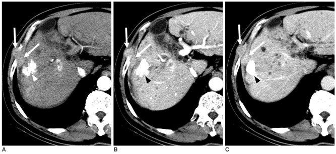

3084 — Di căn theo đường kim sau sinh thiết/đốt u: nốt nhỏ ven đường kim, hệ quả lớn
Tags: pattern:not pattern:di-can pattern:not-duong-kim pattern:ngam-thuoc vung:o-bung vung:thanh-bung vung:gan vung:da-day protocol:CT-bung protocol:PET-CT protocol:EUS-FNA protocol:sinh-thiet protocol:dot-nhiet
Mức chắc chắn (certainty): tổng hợp y văn (literature synthesis) — ghép loạt 10 năm về di căn đường kim sau can thiệp HCC (Korean J Radiol 2008, PMC2627263), tổng quan hệ thống EUS-TA (Diagnostics 2022, PMC9498098), ca EUS-FNA tụy có CT/endoscopy/EUS (BMC Gastroenterol 2020, PMC6964060) và ca EUS-FNA phát hiện muộn (DEN Open 2024, PMC11033486). Không có ca do nhóm tự chụp.
Câu hỏi thực hành: bệnh nhân 65 tuổi, HCC thùy phải 7 cm dưới bao gan, sinh thiết qua da 4 tháng trước; CT theo dõi thấy dải mô mềm dài 2 cm trong mô mỡ dưới da thành ngực phải, đúng đường kim cũ. Đây là thoát vị, áp-xe, sẹo, hay di căn đường kim? Bài chốt ba nguyên tắc: (1) nốt nằm đúng đường kim + ngấm thuốc như u nguyên phát = nghi di căn đường kim; (2) phải đọc toàn bộ đường kim từ da vào tạng, không chỉ vùng u; (3) cách phòng tốt nhất là chọn đường kim, giảm số lần chọc và đốt/bịt đường kim khi có thể.
1. Tổng quan bệnh học – cơ chế hình ảnh: vì sao tế bào u “đi theo” kim
- Cơ chế: khi kim xuyên qua u, tế bào u dính vào thành kim/lòng kim rồi được kéo ra theo đường kim; tế bào còn sống bám vào mô mỡ, cơ, thành tạng và tạo ổ di căn nhỏ dọc đường. Đây là gieo trồng do can thiệp (iatrogenic implantation), không phải di căn theo đường máu/bạch huyết.
- Vì sao nốt ngấm thuốc: mô u cấy vào đường kim tân sinh mạch giống u nguyên phát; trên CT có cản quang, nốt ngấm thuốc thì động mạch, có thể đồng đậm độ với cơ trên phim không cản quang — vì vậy phải chụp có cản quang và đọc đúng thì.
- Vì sao nằm trong mỡ dưới da: mỡ có đậm độ thấp (−50 đến −100 HU), nên nốt mô mềm nổi bật dù chỉ vài mm; trong cơ, nốt đồng đậm độ nên dễ bỏ sót nếu không so sánh thì động mạch.
- Vì sao có thể xuất hiện muộn: tế bào cấy vào có thể ngủ yên; ca HCC xuất hiện sau 4 tháng, sau RFA 13 tháng, sau EUS-FNA 25 tháng và có ca 2,5 năm — theo dõi ngắn không loại trừ.
- Ngưỡng định lượng phải thuộc:
| Bối cảnh | Tỷ lệ / số liệu | Nguồn |
|---|---|---|
| Sinh thiết HCC qua da | 0–5,1%; tại một trung tâm 9/1.182 = 0,76% | PMC2627263 |
| PEIT (tiêm ethanol) HCC | 1/53 = 1,9% | PMC2627263 |
| RFA HCC | 0–4,4%; một trung tâm báo 12,5% | PMC2627263 |
| EUS-TA (chọc hút/ sinh thiết qua nội soi) | Gộp 0,3% (95% CI 0,2–0,4%) trên 13.238 bệnh nhân, I² = 0% | PMC9498098 |
| EUS-TA ung thư tụy | 0,4% (0,2–0,6%) | PMC9498098 |
| EUS-TA nang tụy | 0,3% (0,1–0,5%) | PMC9498098 |
| EUS-TA và di căn phúc mạc về sau | OR 1,02 (0,72–1,46) — không tăng so với không chọc | PMC9498098 |
| Thời gian xuất hiện | 4 tháng (sinh thiết HCC); 13 tháng (RFA); 25 tháng (EUS-FNA); 2,5 năm | PMC2627263; PMC6964060; PMC12629836 |
| Kích thước nốt | 23 mm ở thành dạ dày; 10 mm u dưới niêm mạc; 2 nốt nhỏ ở cơ liên sườn | PMC6964060; PMC2627263 |
- Yếu tố nguy cơ (từ loạt HCC): u dưới bao gan, kim lớn (14–17 G) và nhiều lần chọc (trung bình 2,8 lần ở nhóm có di căn), kim end-cutting làm mảnh bệnh phẩm vụn, không đốt đường kim, PEIT nhiều đợt, u > 2 cm, độ mô học cao, suy giảm miễn dịch (PMC2627263).
2. Mẫu hình + chẩn đoán phân biệt theo vị trí (gamut)
- Mẫu hình chung: một hoặc vài nốt tròn/bầu dục, ngấm thuốc, nằm trên một đường thẳng từ tạng đích ra da; có thể dạng dải nếu tế bào lan dọc đường kim; thường không có vỏ, không hoại tử trung tâm khi còn nhỏ.
- Gamut theo đường vào:
- Thành ngực – màng phổi: sau sinh thiết phổi/màng phổi, đốt u phổi — nốt ở cơ liên sườn, mô dưới da, khoang màng phổi.
- Thành bụng: sau sinh thiết gan, RFA/PEI HCC, sinh thiết thận/tụy — nốt ở cơ thẳng bụng, mô mỡ dưới da, phúc mạc.
- Thành dạ dày: sau EUS-FNA xuyên dạ dày u tụy — nốt dưới niêm mạc, có thể loét niêm mạc.
- Vùng đáy chậu: sau sinh thiết tiền liệt tuyến qua đáy chậu — nốt dọc đường kim ở đáy chậu/mô cạnh trực tràng.
- Cổ – tuyến giáp: sau FNA/đốt u giáp — nốt ở cơ trước giáp/đường kim.
- Vú: sau core biopsy — nốt dọc đường kim trong mô vú/mô mỡ.
- Xương – mô mềm: sau sinh thiết xương — nốt trong mô mềm quanh xương/đường kim.
- Hệ thần kinh: sau sinh thiết định vị (đặc biệt DIPG) — di căn đường kim trong nhu mô não.
- Gamut theo hình ảnh: di căn đường kim · tái phát tại chỗ (sát bờ đốt) · di căn mới trong tạng · sẹo xơ/u hạt · áp-xe/tụ máu · di căn lỗ trocar sau nội soi · mô tuyến giáp lạc chỗ ở đường kim cổ.
3. Bảng so sánh phân biệt (ma trận đối chiếu)
| Thực thể (entity) | Hình ảnh điển hình | Chốt vào (rule-in) | Chốt loại (rule-out) | Gợi ý xác nhận |
|---|---|---|---|---|
| Di căn đường kim | Một/vài nốt ngấm thuốc, nằm đúng đường kim, từ tạng ra da; có thể dạng dải; xuất hiện sau 4 tháng–2,5 năm | Vị trí đúng đường kim + ngấm thuốc thì động mạch + cùng mô học u nguyên phát | Nốt ngoài đường kim, không ngấm thuốc, không liên quan thủ thuật → không phải | CT có cản quang đa thì; PET-CT; sinh thiết nốt |
| Tái phát tại chỗ sau đốt | Nốt sát bờ ổ đốt, thường không đúng đường kim, ngấm thuốc ở thì động mạch; có thể kèm thải thuốc | Nằm trong/ sát ổ đốt + lớn dần + ngấm thuốc | Nằm dọc đường kim ra da, cách ổ đốt → nghĩ gieo trồng | CT/MRI đa thì; so ảnh cũ; sinh thiết nếu ảnh hưởng điều trị |
| Di căn mới trong tạng | Nốt trong nhu mô tạng, không theo đường kim; có thể nhiều ổ | Nhiều nốt + không liên quan đường kim + bệnh cảnh tiến triển | Một nốt đơn độc đúng đường kim → nghĩ seeding | CT ngực/bụng; PET-CT; mô học |
| Sẹo xơ/u hạt | Nốt giảm đậm độ, bờ đều, không ngấm thuốc hoặc ngấm rất ít; ổn định qua nhiều lần chụp | Không ngấm thuốc + không lớn sau ≥ 6–12 tháng | Ngấm thuốc mạnh + lớn dần → không phải sẹo | So sánh nhiều mốc; MRI T2/ADC; theo dõi |
| Áp-xe/tụ máu đường kim | Ổ dịch 0–20 HU, vỏ ngấm thuốc viền, có thể bọt khí, đau/sốt | Sốt/đau + vỏ dày + khí + đáp ứng kháng sinh | Không sốt, đặc, ngấm thuốc đặc → nghĩ u | Siêu âm/CT; chọc hút nếu cần |
| Di căn lỗ trocar | Nốt ở thành bụng/lỗ trocar sau mổ nội soi, thường nhiều lỗ hoặc lỗ lấy bệnh phẩm | Tiền sử nội soi + nốt tại lỗ trocar + cùng mô học | Chỉ một đường kim nhỏ, không qua lỗ trocar → nghĩ seeding đường kim | CT thành bụng; so vị trí trocar |
| U mô mềm nguyên phát/khác | Khối không tương ứng đường kim, có thể vôi hóa, mỡ, mạch máu | Không liên quan thủ thuật + đặc điểm mô học riêng | Đúng đường kim + tiền sử ung thư → nghĩ seeding | MRI mô mềm; sinh thiết |

BMC Gastroenterol 2020 (PMC6964060), CC BY 4.0: (a) CT — khối 23 mm giảm đậm độ ở thành thân dạ dày (đầu mũi tên) sau 25 tháng; (b) hạch quanh dạ dày to (mũi tên); (c) nội soi — u dưới niêm mạc ~10 mm thành sau dạ dày; (d) EUS — khối giảm âm ở dưới niêm mạc (mũi tên). Đây là đường vào xuyên dạ dày — ổ gieo trồng nằm ngay thành dạ dày. Ảnh nguyên bản.
Korean J Radiol 2008 (PMC2627263), CC BY-NC 3.0: (A) HCC 7 cm dưới bao gan (mũi tên); (B) sau sinh thiết 4 tháng — dải mô mềm ngấm thuốc trong mô mỡ dưới da thành ngực phải (mũi tên trắng), đúng đường kim; u nguyên phát đã được TACE (đầu mũi tên đen). Đây là dạng hình dải của gieo trồng đường kim. Ảnh nguyên bản.4. Protocol chụp + ngưỡng xử trí
- Trước thủ thuật — phòng ngừa là chính:
- Chọn đường kim ngắn nhất, tránh qua màng phổi/phúc mạc/tạng lành không cần thiết; với u gan dưới bao, cân nhắc đường liên sườn thay vì xuyên qua phúc mạc.
- Dùng kim nhỏ nhất đủ lấy bệnh phẩm, giảm số lần chọc; với EUS, EUS-FNB có thể lấy mô với ít lần chọc hơn FNA (khuyến cáo từ tổng quan).
- Hệ coaxial (kim ngoài giữ đường, kim trong thay nhiều lần) và bịt/đốt đường kim khi rút (gelatin sponge, đốt nhiệt) — bằng chứng không đồng nhất nhưng được nhiều nhóm áp dụng.
- Với RFA: đốt đường kim, dùng điện cực làm mát trong, giảm số phiên đốt — các tác giả cho là làm giảm gieo trồng so với PEIT.
- Theo dõi sau thủ thuật:
- Chụp toàn bộ đường kim, không chỉ tạng đích: CT ngực/bụng có cản quang từ da vào tạng; với EUS, nội soi + EUS đánh giá thành dạ dày/thực quản.
- Thời điểm: lần đầu theo lịch ung thư (thường 3–6 tháng), sau đó tùy bệnh; không có lịch thống nhất cho seeding — phải duy trì cảnh giác nhiều năm vì ca muộn 2,5 năm.
- PET-CT khi CT nghi ngờ hoặc để phân biệt sẹo/u; lưu ý âm giả với u nhầy, dương giả với viêm.
- Xử trí khi phát hiện:
- Cắt bỏ đường kim + phần tạng liên quan nếu còn mổ được và bệnh nhân đủ điều kiện — đây là cách chữa triệt để nhất.
- Đốt nhiệt/RFA/cryo hoặc xạ trị nếu không mổ được, tổn thương nhỏ, đơn độc.
- Điều trị toàn thân theo bệnh nền khi đã có di căn ngoài đường kim; không coi seeding là “di căn xa” khi nó còn khu trú.
flowchart TD
A[Theo dõi sau sinh thiết hoặc đốt u] --> B[CT hoặc MRI toàn bộ đường kim từ da đến tạng]
B --> C{Nốt mới dọc đường kim?}
C -->|Không| D[Tiếp tục theo dõi theo lịch ung thư]
C -->|Có| E{Ngấm thuốc thì động mạch + đúng đường kim + cùng mô học?}
E -->|Không| F[Loại trừ tái phát tại chỗ, di căn mới, sẹo, áp-xe]
E -->|Có| G[Nghi di căn đường kim]
G --> H{Cắt được không?}
H -->|Có| I[Cắt đường kim + phần tạng liên quan]
H -->|Không| J[Đốt nhiệt hoặc xạ trị hoặc điều trị toàn thân]
5. Biến thể bình thường và cạm bẫy
- Nốt nhỏ trong mỡ dưới da sau sinh thiết hay bị bỏ qua vì “chỉ là mỡ”; luôn đọc đường kim trên mọi lát cắt từ da vào tạng.
- Nhầm với thoát vị/thoát vị mỡ: nốt seeding đặc, ngấm thuốc, không có cổ túi phúc mạc; thoát vị có mỡ và mạch đi vào.
- Nhầm với áp-xe: seeding không sốt, không đau, không có vỏ dày/bọt khí; áp-xe đáp ứng kháng sinh và có vỏ ngấm thuốc viền.
- Tái phát tại chỗ vs seeding: tái phát sát bờ ổ đốt, seeding dọc đường kim ra da; hai tổn thương có thể cùng tồn tại — đừng dừng ở một tổn thương.
- PET âm không loại trừ: u nhầy, tổn thương < 5 mm, đường kim ở mô mỡ ít tế bào → vẫn cần CT/MRI và theo dõi.
- PET dương không chứng minh u: viêm sau đốt/sinh thiết, mô hạt, nhiễm trùng đều bắt FDG; cần đối chiếu hình thái và mô học.
- Nhiều nốt = nhiều lần chọc: đừng gọi là “di căn đa ổ” nếu các nốt thẳng hàng trên một đường kim.
- Đường kim xuyên qua tạng lành (dạ dày, phổi, phúc mạc) làm tăng nguy cơ; ghi lại đường vào trong báo cáo để lần sau còn đối chiếu.
- Không có hệ phân độ chuẩn cho seeding; mô tả vị trí, kích thước, số nốt, mô học thay vì gán độ.
6. Tự lượng giá — Blind Quiz
Ca 1 — HCC dưới bao gan, sinh thiết 4 tháng trước, nay có dải mô mềm ở thành ngực.
- Gợi ý: nữ 65 tuổi, HCC 7 cm dưới bao gan, sinh thiết bằng kim end-cutting, đã TACE.
- Câu hỏi: Dấu hiệu ở (B) nằm ở đâu? Vì sao nó ngấm thuốc? Chẩn đoán và 3 phân biệt?
Bấm để hiện đáp án (findings + chẩn đoán)
- Dấu hiệu: dải mô mềm dài, ngấm thuốc trong mô mỡ dưới da thành ngực phải, nằm đúng đường kim từ gan ra da; u gan đã TACE (đầu mũi tên đen).
- Chẩn đoán: di căn đường kim (needle tract seeding) sau sinh thiết HCC — mô u cấy vào mỡ dưới da, tân sinh mạch nên ngấm thuốc.
- Phân biệt: áp-xe/tụ máu (không ngấm đặc, có vỏ), sẹo xơ (không ngấm, ổn định), di căn mới trong gan (không theo đường kim).
- Nguồn ảnh: Korean J Radiol 2008 (PMC2627263), CC BY-NC 3.0.
Ca 2 — Sau RFA HCC 13 tháng, hai nốt nhỏ ở cơ liên sườn.

- Gợi ý: nam 72 tuổi, RFA HCC bằng điện cực đa nan, có lipiodol trong u.
- Câu hỏi: Hai nốt nằm ở đâu? Chúng ngấm thuốc thì nào? Vì sao không phải tái phát tại chỗ?
Bấm để hiện đáp án
- Dấu hiệu: (A–C) hai nốt ngấm thuốc thì động mạch, nằm trong cơ liên sườn dọc đường kim cũ; ổ đốt có lipiodol (đầu mũi tên), không còn u sống.
- Chẩn đoán: di căn đường kim sau RFA, không phải tái phát tại chỗ (tái phát sát bờ ổ đốt, không theo đường kim ra thành ngực).
- Xử trí: cắt/đốt nốt đường kim nếu còn khu trú; tiếp tục theo dõi toàn bộ đường kim.
- Nguồn ảnh: Korean J Radiol 2008 (PMC2627263), CC BY-NC 3.0.
Ca 3 — Sau EUS-FNA u tụy 25 tháng, khối thành dạ dày.
- Gợi ý: bệnh nhân đã cắt đuôi tụy vì ung thư biểu mô tuyến tụy; EUS-FNA xuyên dạ dày trước đó.
- Câu hỏi: Khối nằm ở lớp nào của thành dạ dày? Vì sao đúng vị trí này? Cần phân biệt với gì?
Bấm để hiện đáp án
- Dấu hiệu: (a) khối 23 mm giảm đậm độ ở thành thân dạ dày; (b) hạch quanh dạ dày; (c) u dưới niêm mạc ~10 mm; (d) EUS khối giảm âm dưới niêm mạc.
- Chẩn đoán: di căn đường kim ở thành dạ dày sau EUS-FNA xuyên dạ dày — tế bào u tụy cấy vào lớp dưới niêm mạc rồi lan ra.
- Phân biệt: u dưới niêm mạc nguyên phát (GIST, leiomyoma), tái phát tại miệng nối, hạch di căn, áp-xe thành dạ dày.
- Nguồn ảnh: BMC Gastroenterol 2020 (PMC6964060), CC BY 4.0.
Bài liên quan chéo
- 100 – Tổng quan hệ Bụng
- 3061 – Di căn lỗ trocar sau PIPAC và nội soi
- 121 – Khối gan & LI-RADS
- 910 – Dẫn lưu áp-xe mật/thận qua da
- 1629 – Đốt nhiệt nhân giáp lành tính đặc
Không dùng để chẩn đoán độc lập khi chưa có người hướng dẫn.